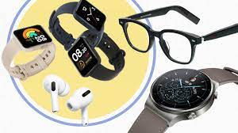

Wearable technology, also known as "wearables," is a category of electronic devices that can be worn as accessories, embedded in clothing, implanted in the user's body, or even tattooed on the skin.
